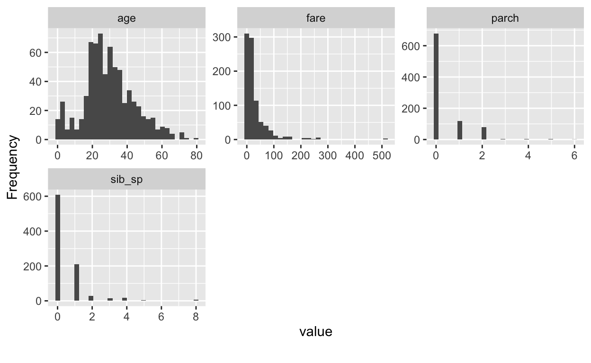

Intro
First of all we are going to load required packages and the data. The data is part of the mlr3data package.
library("mlr3")
library("mlr3learners")
library("mlr3pipelines")
library("mlr3data")
library("mlr3misc")
data("titanic")The titanic data is very interesting to analyze, even though it is part of many tutorials and showcases. This is because it requires many steps often required in real-world applications of machine learning techniques, such as feature engineering, missing value imputation, handling factors and others.
In order to obtain solutions comparable to official leaderboards, such as the ones available from CRAN, we split the data into train and test set before doing any further analysis.
titanic_train = titanic[1:891, ]
titanic_test = titanic[892:1309, ]Exploratory Data Analysis
With the dataset, we get an explanation of the meanings of the different variables:
survived Survival
(0 = No; 1 = Yes)
pclass Passenger Class
(1 = 1st; 2 = 2nd; 3 = 3rd)
name Name
sex Sex
age Age
sibsp Number of Siblings/Spouses Aboard
parch Number of Parents/Children Aboard
ticket Ticket Number
fare Passenger Fare
cabin Cabin
embarked Port of Embarkation
(C = Cherbourg; Q = Queenstown; S = Southampton)We can use the skimr package in order to get a first overview of the data:
skimr::skim(titanic_train)| Name | titanic_train |
| Number of rows | 891 |
| Number of columns | 11 |
| _______________________ | |
| Column type frequency: | |
| character | 3 |
| factor | 4 |
| numeric | 4 |
| ________________________ | |
| Group variables | None |
Variable type: character
| skim_variable | n_missing | complete_rate | min | max | empty | n_unique | whitespace |
|---|---|---|---|---|---|---|---|
| name | 0 | 1.00 | 12 | 82 | 0 | 891 | 0 |
| ticket | 0 | 1.00 | 3 | 18 | 0 | 681 | 0 |
| cabin | 687 | 0.23 | 1 | 15 | 0 | 147 | 0 |
Variable type: factor
| skim_variable | n_missing | complete_rate | ordered | n_unique | top_counts |
|---|---|---|---|---|---|
| survived | 0 | 1 | FALSE | 2 | 0: 549, 1: 342 |
| pclass | 0 | 1 | TRUE | 3 | 3: 491, 1: 216, 2: 184 |
| sex | 0 | 1 | FALSE | 2 | mal: 577, fem: 314 |
| embarked | 2 | 1 | FALSE | 3 | S: 644, C: 168, Q: 77 |
Variable type: numeric
| skim_variable | n_missing | complete_rate | mean | sd | p0 | p25 | p50 | p75 | p100 | hist |
|---|---|---|---|---|---|---|---|---|---|---|
| age | 177 | 0.8 | 29.70 | 14.53 | 0.42 | 20.12 | 28.00 | 38 | 80.00 | ▂▇▅▂▁ |
| sib_sp | 0 | 1.0 | 0.52 | 1.10 | 0.00 | 0.00 | 0.00 | 1 | 8.00 | ▇▁▁▁▁ |
| parch | 0 | 1.0 | 0.38 | 0.81 | 0.00 | 0.00 | 0.00 | 0 | 6.00 | ▇▁▁▁▁ |
| fare | 0 | 1.0 | 32.20 | 49.69 | 0.00 | 7.91 | 14.45 | 31 | 512.33 | ▇▁▁▁▁ |
skimr::skim(titanic_test)| Name | titanic_test |
| Number of rows | 418 |
| Number of columns | 11 |
| _______________________ | |
| Column type frequency: | |
| character | 3 |
| factor | 4 |
| numeric | 4 |
| ________________________ | |
| Group variables | None |
Variable type: character
| skim_variable | n_missing | complete_rate | min | max | empty | n_unique | whitespace |
|---|---|---|---|---|---|---|---|
| name | 0 | 1.00 | 13 | 63 | 0 | 418 | 0 |
| ticket | 0 | 1.00 | 3 | 18 | 0 | 363 | 0 |
| cabin | 327 | 0.22 | 1 | 15 | 0 | 76 | 0 |
Variable type: factor
| skim_variable | n_missing | complete_rate | ordered | n_unique | top_counts |
|---|---|---|---|---|---|
| survived | 418 | 0 | FALSE | 0 | 0: 0, 1: 0 |
| pclass | 0 | 1 | TRUE | 3 | 3: 218, 1: 107, 2: 93 |
| sex | 0 | 1 | FALSE | 2 | mal: 266, fem: 152 |
| embarked | 0 | 1 | FALSE | 3 | S: 270, C: 102, Q: 46 |
Variable type: numeric
| skim_variable | n_missing | complete_rate | mean | sd | p0 | p25 | p50 | p75 | p100 | hist |
|---|---|---|---|---|---|---|---|---|---|---|
| age | 86 | 0.79 | 30.27 | 14.18 | 0.17 | 21.0 | 27.00 | 39.0 | 76.00 | ▂▇▃▂▁ |
| sib_sp | 0 | 1.00 | 0.45 | 0.90 | 0.00 | 0.0 | 0.00 | 1.0 | 8.00 | ▇▁▁▁▁ |
| parch | 0 | 1.00 | 0.39 | 0.98 | 0.00 | 0.0 | 0.00 | 0.0 | 9.00 | ▇▁▁▁▁ |
| fare | 1 | 1.00 | 35.63 | 55.91 | 0.00 | 7.9 | 14.45 | 31.5 | 512.33 | ▇▁▁▁▁ |
Here we can also inspect the data for differences in the train and test set. This might be important, as shifts in the data distribution often make our models unreliable.
DataExplorer::plot_bar(titanic_train, nrow = 5, ncol = 3)
DataExplorer::plot_histogram(titanic_train, nrow = 2, ncol = 3)
DataExplorer::plot_boxplot(titanic_train, by = "survived", nrow = 2, ncol = 3)
We can now create a Task from our data. As we want to classify whether the person survived or not, we will create a TaskClassif. We’ll ignore the ‘titanic_test’ data for now and come back to it later.
A first model
task = TaskClassif$new("titanic", titanic_train, target = "survived", positive = "1")
task
<TaskClassif:titanic> (891 x 11)
* Target: survived
* Properties: twoclass
* Features (10):
- chr (3): cabin, name, ticket
- dbl (2): age, fare
- fct (2): embarked, sex
- int (2): parch, sib_sp
- ord (1): pclassOur Task currently has \(3\) features of type character, which we don’t really know how to handle: “Cabin”, “Name”, “Ticket” and “PassengerId”. Additionally, from our skim of the data, we have seen, that they have many unique values (up to 891).
We’ll drop them for now and see how we can deal with them later on.
task$select(cols = setdiff(task$feature_names, c("cabin", "name", "ticket")))Additionally, we create a resampling instance that allows to compare data.
rdesc = rsmp("cv", folds = 3L)$instantiate(task)To get a first impression of what performance we can fit a simple decision tree:
learner = mlr_learners$get("classif.rpart")
# or shorter:
learner = lrn("classif.rpart")
res = resample(task, learner, rdesc, store_models = TRUE)
agg = res$aggregate(msr("classif.acc"))
agg
classif.acc
0.8080808 So our model should have a minimal accuracy of 0.808 in order to improve over the simple decision tree.
If we now try to fit a ‘ranger’ random forest model, we will get an error, as ‘ranger’ models can not naturally handle missing values.
learner = lrn("classif.ranger")
learner$param_set$values = list(num.trees = 250, min.node.size = 4)
res = resample(task, learner, rdesc, store_models = TRUE)
Error: Missing data in columns: age, embarked.This means we have to find a way to impute the missing values.
Imputation
A very simple way to do this to just impute a constant value for each feature, we could i.e. impute every character or factor column with missing and every numeric column with -999. And depending on the model, this might actually be fine. This approach has a few drawbacks though:
-999could be a real value in the data.- imputing
-999skews the distribution of the data, which might result in bad models.
As a result, instead of imputing a constant value, we will do two things: * Draw samples from each numeric features’ histogram using PipeOpImputeHist * Add an additional column for each variable that indicates whether a value was missing or not. If the information that a value was missing is important, this column contains this information.
This imputation scheme is called ‘imputation with constants’ and is already implemented in mlr3pipelines. It can be done using PipeOpImputeConstant.
Before imputation, our data looks as follows:
task$missings()
survived age embarked fare parch pclass sex sib_sp
0 177 2 0 0 0 0 0 Let’s first deal with the categorical variables:
po_newlvl = po("imputenewlvl")
task_newlvl = po_newlvl$train(list(task))[[1]]Note that we use the PipeOp in an unusual way, which is why the syntax does not look very clean. We’ll learn how to use a full graph below.
First, let’s look at the result:
task_newlvl$missings()
survived age fare parch pclass sex sib_sp embarked
0 177 0 0 0 0 0 0 Cool! embarked does not have missing values anymore. Note that PipeOpImputeNewLvl by default affects character, factor and ordered columns.
For the numeric features we want to do two things, impute values and add an indicator column. In order to do this, we need a more complicated structure, a Graph.
Our po_indicator creates the indicator column. We tell it to only do this for numeric and integer columns via its param_vals, and additionally tell it to create a numeric column (0 = “not missing”, 1 = “missing”).
po_indicator = po("missind",
param_vals = list(affect_columns = selector_type(c("numeric", "integer")), type = "numeric"))Now we can simultaneously impute features from the histogram and create indicator columns. This can be achieved using the gunion function, which puts two operations in parallel:
gr = gunion(list(po_indicator, po("imputehist")))
gr = gr %>>% po("featureunion")Afterwards, we cbind the resulting data using po("featureunion"), connecting the different operations using our graph connector: %>>%.
We can now also connect the newlvl imputation:
gr = gr %>>% po("imputenewlvl")and see what happens when we now train the whole Graph:
task_imputed = gr$clone()$train(task)[[1]]
task_imputed$missings()
survived missing_age pclass sex fare parch
0 0 0 0 0 0
sib_sp age embarked
0 0 0 Awesome, no more missing values!
We could now use task_imputed for resampling and see whether a ranger model does better. But this is dangerous! If we preprocess all training data at once, data could leak through the different cross-validation folds. In order to do this properly, we have to process the training data in every fold separately. Luckily, this is automatically handled in our Graph, if we use it through a GraphLearner.
We can simple append a ranger learner to the Graph and create a GraphLearner from this.
glrn = GraphLearner$new(gr$clone() %>>% po(learner))
res = resample(task, glrn, rdesc, store_models = TRUE)
agg = res$aggregate(msr("classif.acc"))
agg
classif.acc
0.8125701 So our model has not improved heavily, currently it has an accuracy of 0.813. In order to improve more, we might need to do some feature engineering.
Feature Engineering
We will do this using PipeOpMutate in order to showcase the power of mlr3pipelines. Additionally, we will make use of the character columns, and thus re-select them:
task$col_roles$feature = c(task$feature_names, c("cabin", "name", "ticket"))
library("stringi")
po_ftextract = po("mutate", param_vals = list(
mutation = list(
fare_per_person = ~ fare / (parch + sib_sp + 1),
deck = ~ factor(stri_sub(cabin, 1, 1)),
title = ~ factor(stri_match(name, regex = ", (.*)\\.")[, 2]),
surname = ~ factor(stri_match(name, regex = "(.*),")[, 2]),
ticket_prefix = ~ factor(stri_replace_all_fixed(
stri_trim(stri_match(ticket, regex = "(.*) ")[, 2]), ".", ""))
)
))Quickly checking what happens:
task_eng = po_ftextract$clone()$train(list(task))[[1]]
task_eng$data()
survived age embarked fare parch pclass sex sib_sp cabin
1: 0 22 S 7.2500 0 3 male 1 <NA>
2: 1 38 C 71.2833 0 1 female 1 C85
3: 1 26 S 7.9250 0 3 female 0 <NA>
4: 1 35 S 53.1000 0 1 female 1 C123
5: 0 35 S 8.0500 0 3 male 0 <NA>
---
887: 0 27 S 13.0000 0 2 male 0 <NA>
888: 1 19 S 30.0000 0 1 female 0 B42
889: 0 NA S 23.4500 2 3 female 1 <NA>
890: 1 26 C 30.0000 0 1 male 0 C148
891: 0 32 Q 7.7500 0 3 male 0 <NA>
name ticket
1: Braund, Mr. Owen Harris A/5 21171
2: Cumings, Mrs. John Bradley (Florence Briggs Thayer) PC 17599
3: Heikkinen, Miss. Laina STON/O2. 3101282
4: Futrelle, Mrs. Jacques Heath (Lily May Peel) 113803
5: Allen, Mr. William Henry 373450
---
887: Montvila, Rev. Juozas 211536
888: Graham, Miss. Margaret Edith 112053
889: Johnston, Miss. Catherine Helen "Carrie" W./C. 6607
890: Behr, Mr. Karl Howell 111369
891: Dooley, Mr. Patrick 370376
fare_per_person deck title surname ticket_prefix
1: 3.62500 <NA> Mr Braund A/5
2: 35.64165 C Mrs Cumings PC
3: 7.92500 <NA> Miss Heikkinen STON/O2
4: 26.55000 C Mrs Futrelle <NA>
5: 8.05000 <NA> Mr Allen <NA>
---
887: 13.00000 <NA> Rev Montvila <NA>
888: 30.00000 B Miss Graham <NA>
889: 5.86250 <NA> Miss Johnston W/C
890: 30.00000 C Mr Behr <NA>
891: 7.75000 <NA> Mr Dooley <NA>Now we can put everything together again, we concatenate our new PipeOp with the Graph created abve and use PipeOpSelect in order to de-select the character features we used for feature extraction. Additionally, we collapse the ‘surname’, so only surnames that make up more than 0.6 % of the data are kept.
In summary we do the following:
mutate: Thepo_ftextractwe defined above extracts additional features from the data.collapsefactors: Removes factor levels that make up less then 3 % of the data.select: Dropscharactercolumns.gunion: Puts twoPipeOps in parallel.missind:po_indicatoradds a column for each numeric with the info whether the value is NA or not.imputehist: Imputes numeric and integer columns by sampling from the histogram.
featureunion: Cbind’s parallel data streams.imputenewlvl: Imputes factor and ordered columns.fixfactors: Removes empty factor levels and removes factor levels that do not exist during training.imputesample: In some cases, if missing factor levels do not occur during training but only while predicting,imputenewlvldoes not create a new level. For those, we sample a random value.learner: Appends a learner to theGraph.
The full graph we created is the following:
learner = lrn("classif.ranger")
learner$param_set$values = list(num.trees = 500, min.node.size = 4)
gr_final = po_ftextract %>>%
po("collapsefactors", param_vals = list(no_collapse_above_prevalence = 0.03)) %>>%
po("select", param_vals = list(selector = selector_invert(selector_type("character")))) %>>%
gunion(list(po_indicator, po("imputehist"))) %>>%
po("featureunion") %>>%
po("imputenewlvl") %>>%
po("fixfactors") %>>%
po("imputesample") %>>%
po(learner)Let us see if things have improved:
glrn = GraphLearner$new(gr_final)
res = resample(task, glrn, rdesc, store_models = TRUE)
agg = res$aggregate(msr("classif.acc"))
agg
classif.acc
0.8249158 We have improved even more! But there are many more things to explore! We could extract even more information from the different features and see what happens.
Future
But now you are left to yourself! There are many kaggle kernels that treat the Titanic Dataset available. This can be a great starter to find even better models.